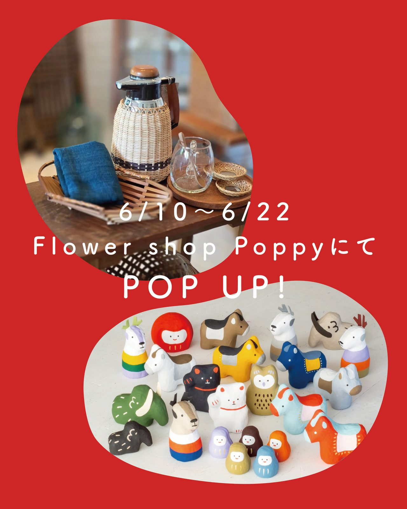
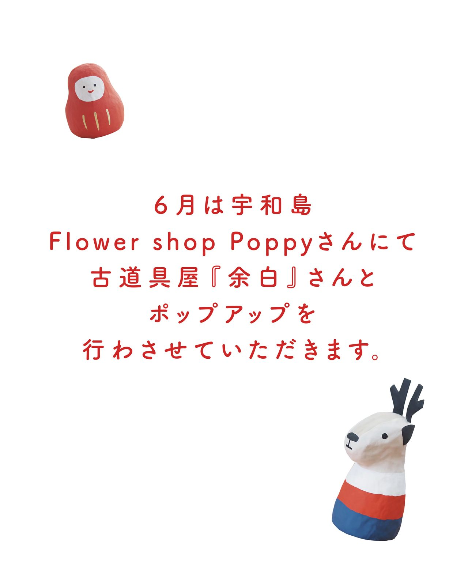
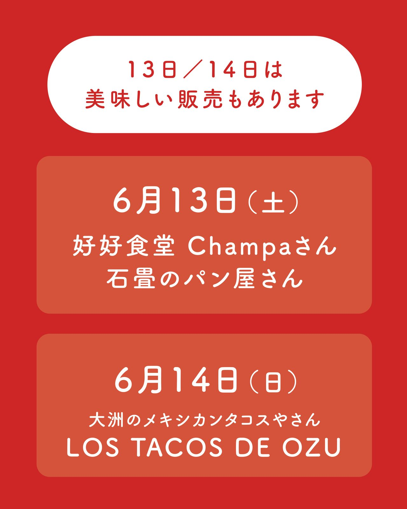
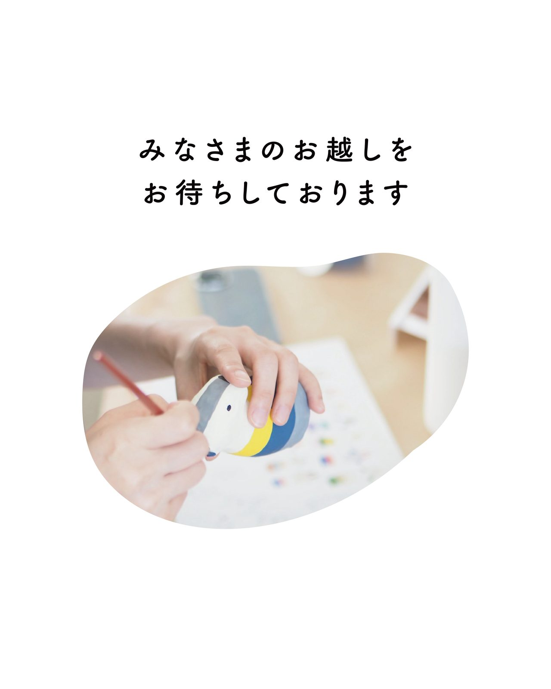

宇和島市の素敵な花屋さん
Flower Shop POPPY（@papipupepoppy3）さんにて
古道具屋『余白』（@yohaku1006）さんと一緒にポップアップをさせていただきます。
古道具屋『余白』＆ 宇和はりこ
《日程》 ６月１０日〜６月２２日
※６月１１日は古道具屋『余白』さんの販売はお休みとなります。
《場所》 FLOWER SHOP『Poppy』
@papipupepoppy3
１３日・１４日は美味しいものも並びます！
◯ ６月１３日（土）
@champa_hao さん・@ishidataminopanya さん
◯ ６月１４日（日）
@los_tacos_de_ozu さん
会期中の『お休み』や駐車場については @papipupepoppy3 さんのインスタをご覧ください。
皆さまのお越しをお待ちしております。